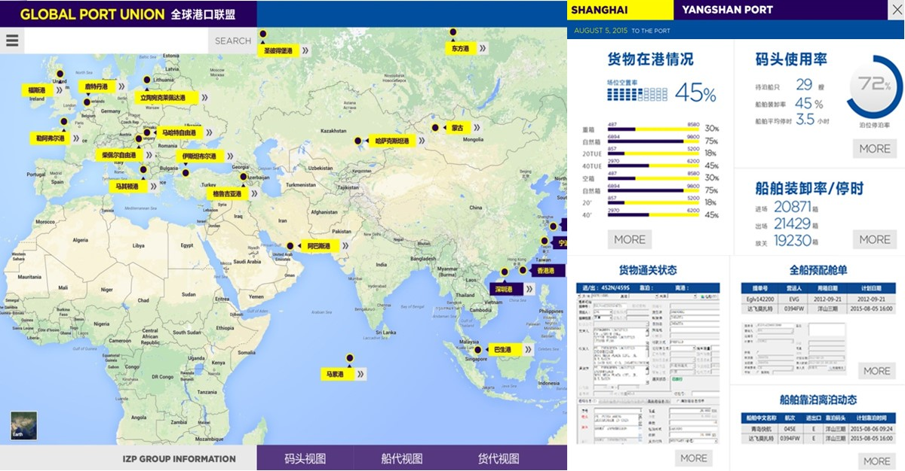
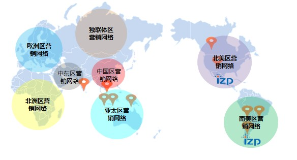
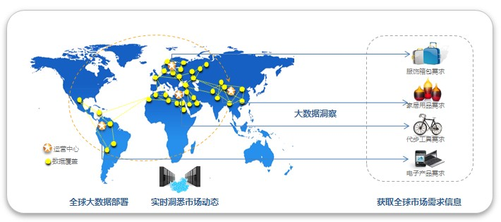
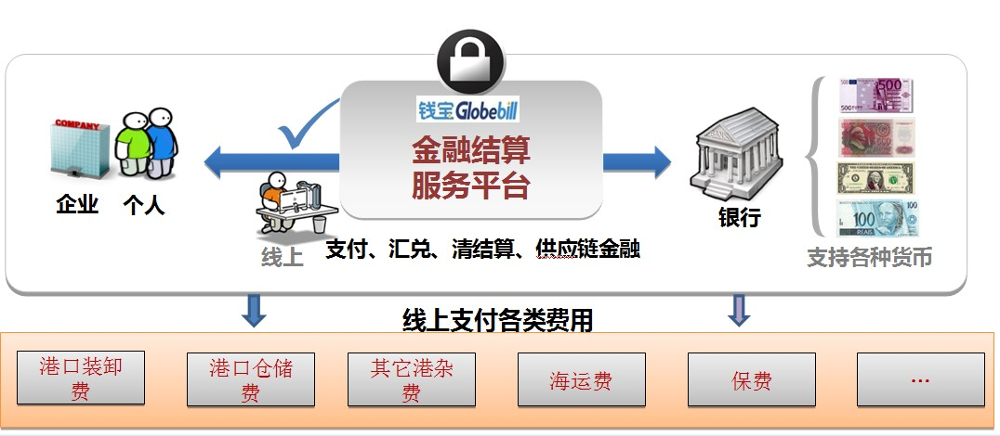
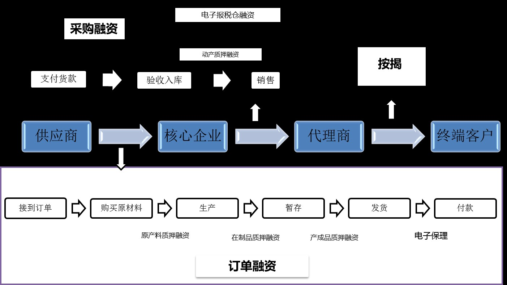
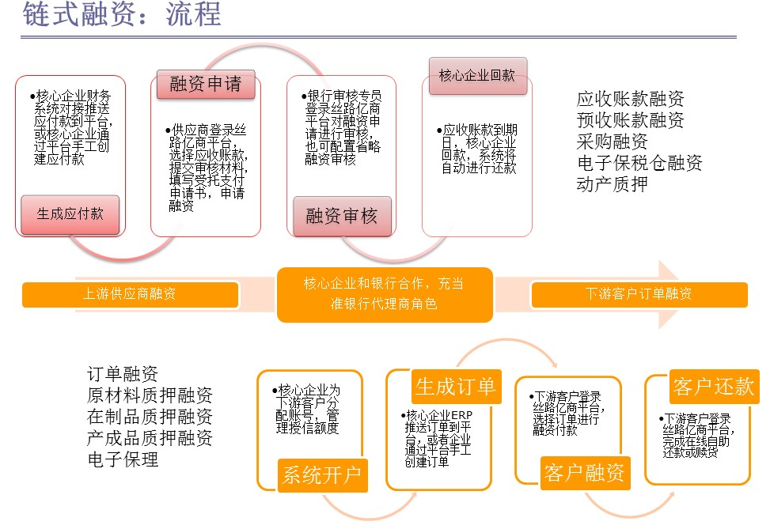
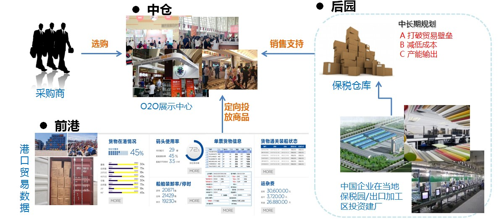
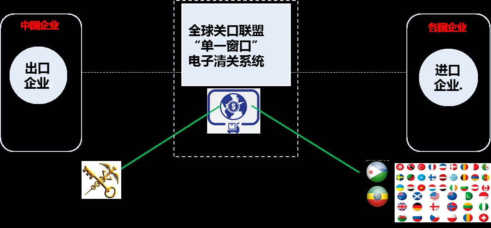
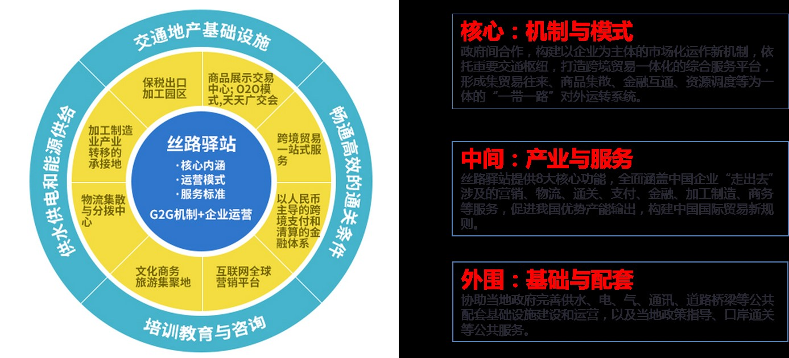

丝路亿商大数据平台服务
依托亿赞普集团和国家发改委信息中心联手打造的国家“一带一路”大数据中心，通过遍布全球的各类型综合服务平台网络，面向各国政府、企业和组织提供市场化、专业化的服务支撑。丝路亿商大数据服务平台是“一带一路”的重要战略信息基础设施，它的建立和完善有利于沿线国家政府和企业了解各个区域的情况，包括经济动态、行业动态、最新新闻、最新政策、社情民意等。丝路亿商通过大数据在各领域的应用，为企业提供各种实时、全面的数据信息，有力地协助企业进行合理的投资，取得更好的发展。
大数据应用服务
全球港口联盟大数据平台服务 丝路亿商从招商局、亿赞普收集数据起步，逐步与国内外各大数据平台交流合作，联合各大海关口岸（包含海港、空港、内陆边境口岸），建立贸易大物流的核心节点，并基于贸易体量和不断增加的港口成员单位，形成国际贸易数据标准；它利用大数据技术建立进出口发展趋势及模型，了解海外需求走势、贸易构成，为企业提供更加精确的动态信息，指导企业按需生产，提升其效能。

大数据营销推广服务
丝路亿商利用大数据技术构建覆盖全球的营销网络，致力于帮助企业解决全球信息流通道问题，把企业品牌及其产品信息通过所建全球营销网络送达到全球各地。是对国家“一带一路”重要战略的响应，积极推动中国企业“走出去”。

大数据营销市场分析
丝路亿商通过其大数据平台实时获取全球市场产品需求和消费动态等信息，让企业掌握全球市场动态，改变以往广泛、盲目、被动的宣传方式，协助企业精准、高效地在全球范围内地推广产品。为企业提供创新、高效的宣传方式，其过程可控、效果可知，让企业掌握营销的主动权，大力提高进出口贸易效率及成交率。除此之外，提供全产业链服务，可结合港口、自贸区等参加丝路驿站建设策划。

金融服务
跨境支付结算平台
现有的贸易支付结算面临着两大困难：由于缺乏以人民币为结算货币的支付清算机构，跨境支付及银行间的清算困难。此外，由于以美元作为结算货币，企业在跨国交易中，进行支付结算时会有两次汇兑过程，导致汇兑成本高昂，对企业和顾客都造成不便，提高了交易成本，不利于简化贸易，推动贸易发展。 丝路亿商提供钱宝跨境支付平台。在贸易过程中，使用钱宝支付平台，可以实现人民币与各国货币的直接支付、结算。比如来自非洲某国的采购商，可以使用当地货币进行交易支付，而中国的商家则能够直接收到人民币，实现与人民币的直接清算，极大地方便了买卖双方，解决了两次汇兑造成的汇兑成本高昂的问题，有利于进一步推动中国企业“走出去”。此外，它还大大推动了跨境人民币业务的发展，提高人民币的竞争力。

丝路亿商链式金融融资平台
供应链金融，简单地说，就是银行将核心企业和上下游企业联系在一起提供灵活运用的金融产品和服务的一种融资模式。即把资金作为供应链的一个溶剂，增加其流动性。 一般来说，一个特定商品的供应链从原材料采购，到制成中间及最终产品，最后由销售网络把产品送到消费者手中，将供应商、制造商、分销商、零售商、直到最终用户连成一个整体。在这个供应链中，竞争力较强、规模较大的核心企业因其强势地位，往往在交货、价格、账期等贸易条件方面对上下游配套企业要求苛刻，从而给这些企业造成了巨大的压力。而上下游配套企业恰恰大多是中小企业，难以从银行融资，结果最后造成资金链十分紧张，整个供应链出现失衡。 丝路亿商提供链式金融融资平台，将核心企业、上下游配套企业及银行集中到一起，确定一个核心企业，以它为出发点，为供应链提供金融支持。一方面，将资金有效注入处于相对弱势的上下游配套中小企业，解决其融资难导致的供应链失衡问题；另一方面，将银行信用融入上下游企业的购销行为，增强其商业信用，促进中小企业与核心企业建立长期战略协同关系，提升整条供应链的竞争能力和稳定性。
 供应链金融产品全景图
链式融资流程
丝路亿商平台提供多模式、多环节融资服务，如应收账款融资、预收账融资、采购融资、电子保税仓融资、动产质押、订单融资等。以应收账款融资为例：应收账款融资是指在供应链核心企业承诺支付的前提下，供应链上下游的中小型企业可用未到期的应收账款向金融机构进行贷款的一种融资模式。该平台以核心企业为平台中心，由它为下游客户分配平台账号并管理授信额度。首先核心企业与上下游企业确定合作，签订合同，生成应付款并上传到丝路亿商平台；接着供应商登录到丝路亿商平台，选择应收账款，提交审核材料发起融资申请；然后合作银行登录丝路亿商平台对融资申请进行审核，发放贷款；最后到应收账款到期日，核心企业回款，系统自动进行还款，完成融资。

贸易便利化服务
丝路亿商外贸综合服务平台
丝路亿商为企业搭建外贸综合服务平台，提供包括港口、物流、电子清关、支付汇兑、金融、园区生产等端到端服务，建立“前港-中仓-后园”模式，串联起丝路驿站，打破贸易壁垒，推动中国企业“走出去”，拓展其海外市场份额。此外，所有交易通过本公司的跨境支付平台——“钱宝”进行支付结算，海外买家能够使用本币进行支付，中国商家直接收到人民币，实现人民币直接清算，推进跨境人民币业务的发展。 前港：丝路亿商联合招商局和亿赞普，发挥招商局港口优势和亿赞普大数据优势，加强港口及其周边物流的辐射范围，打造“一带一路”大港口格局。通过大数据平台对各港口装卸、仓储、运输、流通加工、配送、信息处理等领域和环节进行整合，结合统一的电子清关系统，实现清关一体化，促进中国商品在“一带一路”国家间无障碍、高效流通。 中仓：在实现港口数据化的基础上，在各丝路驿站铺设O2O展示中心，收集该中心所在地的产品需求，展陈相关中国产品，以增强贸易的地区针对性，提高成交率。同时，增建保税区仓库，确保货物供给，提高贸易效率。以吉布提丝路驿站建设为例：吉布提港是东非最大的现代化港口之一。首先通过大数据平台分析得出，中国对吉布提最有竞争力的产品为机械设备类的日常机械、电工器材、汽车及其零配件等。接着在吉布提当地建立O2O展示中心，针对吉布提当地及周边地区需求，邀请中国相应的企业、工厂参展，同时以吉布提港为依托，向周边地区宣传O2O展示中心，邀请当地及周边地区的贸易商前来洽谈。这样吉布提及周边的东非贸易商不必支付高昂的差旅费来中国选购所需产品，在当地就能够直观看到并体验产品，为中国企业提供了一个很好的宣传、展示平台，大大促进贸易的成交率。最后，在O2O展示中心达成一定的贸易成交量后，企业可以预估判断，提前将一定量的商品运至吉布提港保税仓库，充分利用海外保税园区的功能。这样一来，一方面中国企业不必提前支付进口关税，减少资金占压，另一方面，国外客户在贸易促成后可以直接从港区提货，大大节省了等待发货运输的时间。 后园：在前港中仓的贸易形势成熟后，企业可以在港口保税园区内建厂，这样可以大幅缩减运输、贸易代理、通关等费用及成本，实现产品运营本地化；同时通过来料加工、进料加工等方式，进行本地加工生产，以绕开进口配额制、许可证制、外汇管制、最低限价等歧视性不利政策，破除关税壁垒。同样以吉布提为例，它是非洲对欧盟输出商品的主要国家，而欧盟对中国的许多商品实行反倾销政策，如果中国企业在吉布提保税园区内建厂，生产加工再出口到欧盟，就能够打破贸易壁垒，有利于大幅拓展中国企业的海外市场份额。

电子通关系统
目前，在部分经济较落后的国家和地区，海关系统网络环境不稳定，经常面临因网络和技术问题而导致通关业务受阻的问题；海关官员在归类、审价、征税时又具人为性和随意性特点，如果缺乏有效的监管，还会存在腐败行为。 为有效解决这些问题，丝路亿商正致力于建立一个连接中国和全球贸易国海关的电子清关系统，其核心为统一、简化报关手续，避免重复报关，减少人为性和随意性造成的失误，解决落后地区与海关沟通成本高的问题，以提高货物通关效率，节省人力物力。 该系统在国内端连接中国海关网络，国外端分别和不同贸易国海关系统互联互通，结合创新的BOM编码和标准数据对接技术，对进出口贸易的报关单证、舱单进行自动翻译，实现电子化、自动化转换和传输，实现“无纸化”办公，并且及时、准确、真实地记录企业进出口活动。该电子清关系统有助于推动“一带一路”沿线国家建立合作关系，去除现存贸易障碍，进一步实现贸易便利化。

顶层架构设计
丝路亿商积极协助招商局集团在全球部署“丝路驿站”，参与丝路驿站整体规划设计和园区核心服务功能模块的运营，配合建设一站式公共服务中心、商品展示展销中心、海外保税仓等项目。
